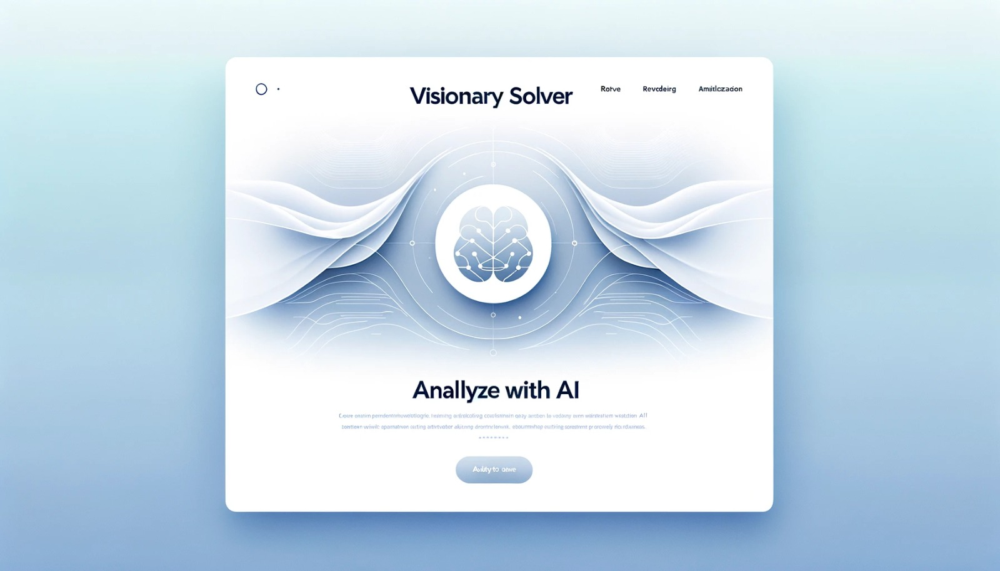

Visionary Solver
Inteligența artificială care revoluționează modul în care rezolvăm testele.
Descriere
Cu "Visionary Solver", procesul obositor de rezolvare a testelor devine istorie. Acest tool AI avansat vă oferă răspunsurile de care aveți nevoie în câteva secunde, cu o acuratețe uimitoare.
Caracteristici cheie
- Rezultate rapide și precise
- Interfață prietenoasă și ușor de folosit
- Funcționează pentru o varietate largă de teste

Ce spun clienții noștri
"Am fost uimit de rapiditatea și acuratețea Visionary Solver. Mi-a economisit ore întregi de muncă!"
- Alexandru Marian.
"Cel mai bun tool pe care l-am folosit vreodată. Recomand cu încredere!"
- Gabriel Petrea.